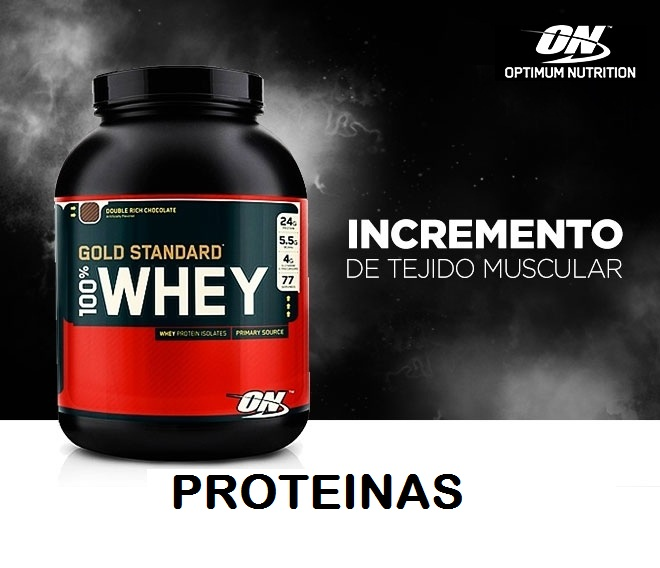
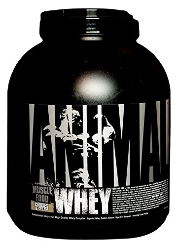
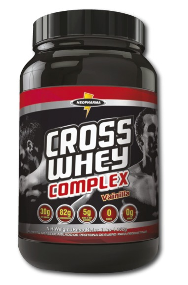

-
100% Whey Gold Standard Comprar $240000
100% whey gold standard Pertenece a la tercera generación de proteínas de suero 100% de la prestigiosa marca Optimum Nutrition.
Contiene una mezcla exclusiva de:
Concentrado de Proteína de Suero Ultrafiltrada Aislado de Proteína de Suero Microfiltrada. Aislado de Proteína de Suero por Intercambio Iónico.
Es una proteína de suero pura, inalterada, con menos cantidad de grasas, colesterol, lactosa y otros carbohidratos con cada servicio. Este suplemento de proteína de suero no es una excepción. De hecho, 100% Whey Gold Standard es mejor que nunca, ya que:
Te proporciona más cantidad de Aislado de Proteína de Suero, la más pura y cara fuente de Proteína de Suero disponible. Mayor porcentaje de proteína. 100% Whey Gold Standard siempre ha sido un referente en este aspecto. Ahora con 24 gramos de proteína por servicio, un 79% de proteína. Han incluido más HydroWhey, Péptidos de Suero hidrolizados de bajo peso molecular que hacen que 100% Whey Gold Standard actué incluso más rápido en tu organismo. Ahora contiene Lactasa y enzimas digestivas para aumentar la absorción y hacer este producto más apto para los individuos que no toleran la lactosa. Más de 4 gramos de Glutamina y precursores de Glutamina junto con 5 gramos de BCAAs (Leucina, Isoleucina y Valina) en cada servicio. -
Mass TechComprar $220000
Ganador de Masa Muscular Avanzado
El nuevo Mass Tech Performance Series es un ganador de masa muscular avanzado diseñado para cualquier persona que le resulte difícil aumentar su tamaño o para aquellos que quieren ganar más fuerza y potencia muscular. Potenciado con 80 gramos de proteína y 1170 calorías de producción masiva (al mezclarlos con 2 tazas de leche desnatada) esta potente fórmula se ve mejorada notablemente con probados conductores anabólicos para el rápido aumento de masa y fuerza muscular!
LOS HECHOS NO MIENTEN
Calorías de la mejor calidad diseñadas para ganar masa muscular
Mass Tech Performance Series es el ganador de peso más versátil disponible en el mercado que se puede tomar una vez al día o dividida en dos porciones para consumirlas por separado. La fórmula nueva y potente ofrece ahora una masiva porción de 1.170 calorías derivadas de proteínas de alta calidad y carbohidratos de rápida asimilación, así como de grasas saludables.
Más proteína por servicio que otros ganadores de peso
La nueva y mejorada fórmula cuenta con 80g de un Sistema Multi-fase de Proteínas que suministra proteínas de rápida, media y lenta digestión. Este sistema de proteínas multi-fase proporciona los aminoácidos esenciales para el cuerpo a diferentes velocidades de liberación, manteniendo un flujo constante y prolongado de aminoácidos en sangre.
Más BCAA y L-leucina por servicio que otros ganadores de peso
La dosis de la fórmula de proteína cuando se mezcla con 2 tazas de leche desnatada proporciona una enorme porción de 7g de L-leucina y 13g de BCAAs, estos ayudan a alimentar sus músculos, a preservar las reservas de glucógeno muscular y a reducir la degradación de las proteínas. -
Animal Whey Comprar $210000
En el mercado de la suplementación proteica, podemos encontrar un amplio catálogo de productos, diseñados para aportar una serie de beneficios notables a los consumidores, en base a diferentes ingredientes y compuestos para cada marca. Esta vez se ha unido a la competencia Animal Whey, un suplemento que, aprovechando la popularidad de la línea compañía, tales como Animal Pak y Animal Cuts, ha llegado para hacerse un hueco en el mercado, esperando una gran aceptación, tal y como ha sucedido con los otros suplementos de la marca.
Composición
Animal Whey está hecho a base de dos formas de proteína de suero junto con concentrado, además de otros ingredientes como:
Enzimas digestivas: papaína y bromelina que aceleran la absorción
proteica
Lecticina
Goma celulosa y goma xantana
Acesulfamo potásico
Sucralosa
Siguiendo la tendencia creada por la industria, este producto no contiene aminoácidos añadidos, tal vez para evitar las sospechas de amino spking, que viene a ser el principal diferenciador de una buena proteína y no sólo el conjunto de aminoácidos “baratos”. Características
Añadido de enzima de rápida digestión para mejorar la abosorción de las proteínas y la digestión. Añadido con proteína de suero de alta calidad. Suplementa las extremas necesidades proteicas para los levantadores de pesas más dedicados. No contiene gluten. -
BeOne Isolate GMNComprar $150000
BeOne Isolate GMN
BEONE es una proteína de suero aislada de alta pureza, rápida y avanzada que ha desarrollado GMN, sus componentes apoyan la construcción de masa muscular, protegen los músculos y ayudan a recuperar de forma rápida. Puedes tomar un scoop que aporta 24 g de proteína, o dos scoop que aportan 48 g de proteína. Con sabores deliciosos de vainilla y chocolate. -
BiProComprar $90000
Bipro es la última tecnología en aislado de proteína de suero, pura y natural para atletas e individuos que desean construir o mantener su masa corporal. A diferencia de los demás productos, Bipro no contiene ninguna mezcla de proteínas o ingredientes no deseados purificados a traves de un proceso de intercambio ionico selectivo, Bipro contiene todos los aminoácidos esenciales, rico en aminoácidos de cadena ramificada (BCAAS) que se metabolizan directamente y son absorbidos con rapidez por el tejido muscular, sin el aislado de la proteína del suero de leche original. La única opción para atletas serios y rigurosos.
Bipro, proteína aislada del suero es la proteína mas activa biológicamente disponible Bipro es una proteína naturalmente completa con todos los aminoácidos esenciales requeridos diariamente por el cuerpo para mantener saludables las estructuras corporales. Bipro es rico en aminoácidos de cadena ramificada, lendina, isoleusma y vainilla, los cuales suplen a los atletas con importantes nutrientes después del entrenamiento para fortalecer, construir y reparar sus musculos. Bipro es rápidamente adsorbido, manteniendo un balance positivo de nitrógeno y creando un ambiente anabólico propicio para la síntesis proteína del musculo. -
CANNIBAL SUPER MASS BEEFComprar $70000
CANNIBAL SUPER MASS BEEF
Cannibal es la proteína de carne de alta tecnología combinada con los mejores carbohidratos y aminoácidos para aumentar masa y musculo. Cannibal te ofrece 65 gramos de la mejor proteína de carne, contiene carbohidratos de fácil asimilación que le proporciona a tu cuerpo energía rápida y no se almacena como deposito de grasas. Cannibal te entrega la nutrición que necesita tu cuerpo.
¡RECARGATE CON COMBUSTIBLE ADICIONAL PARA TU CUERPO!
Cada porción de Cannibal entrega 8 gramos de estupendos aminoácidos (BCAA’S) de rápida absorción, las cuales son agotados durante el entrenamiento duro y actúan directamente en los músculos para ayudar a promover la capacidad de la proteína y velocidad de recuperación. Te proporciona más de 2 gramos de GLUTAMIN -
CROSSWHEY COMPLEX Comprar $60000
TNT CROSSWHEY COMPLEX
CROSSWHEY COMPLEX es un complemento nutricional deportivo para atletas que buscan reflejar en su apariencia las horas de dedicación y ejercicio, contribuye a aumentar talla muscular. CROSSWHEY COMPLEX te proporciona 480 calorias en una porción de 120 gramos, de los cuales 30 gramos sin pura proteina de la leche de altísima disponibilidad, 82 gramos de carbohidratos que son pura energía. Cero azucar y 5 gramos de mezcla lista de glutamina y 3 gramos de cratina que te dan el soporte.
No contiene sodio y es bajo en grasa.